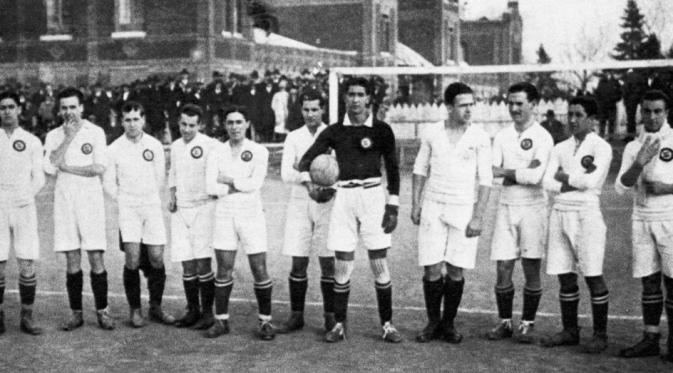
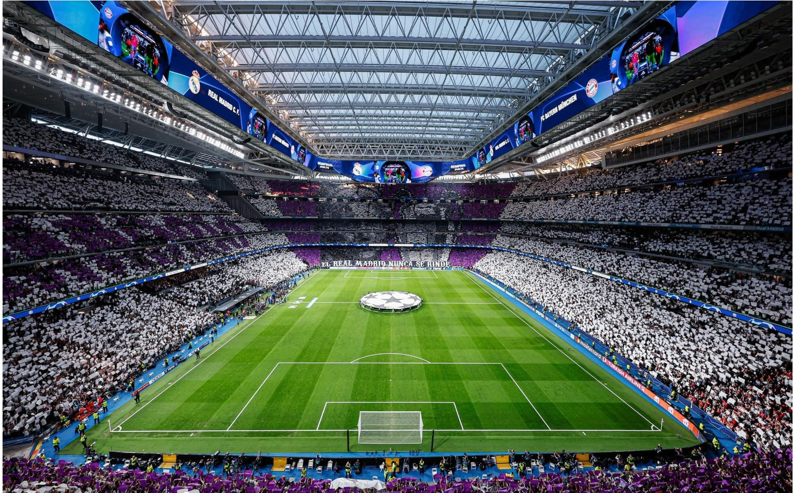
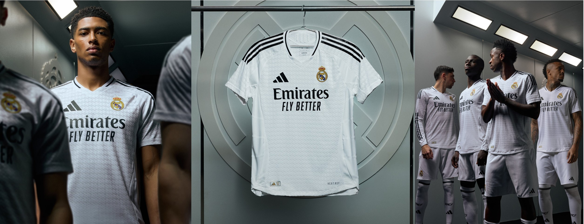
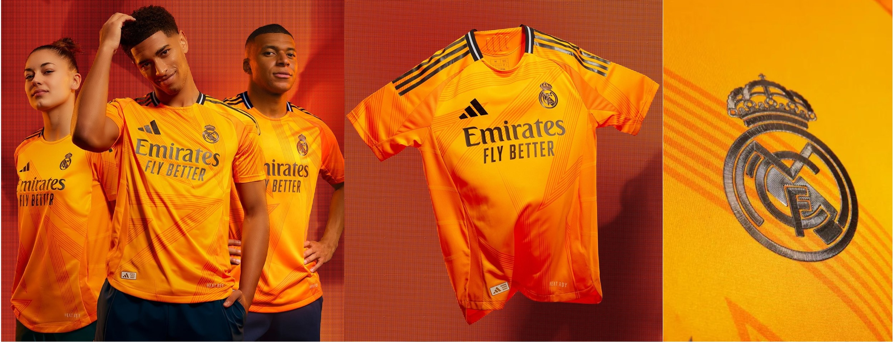
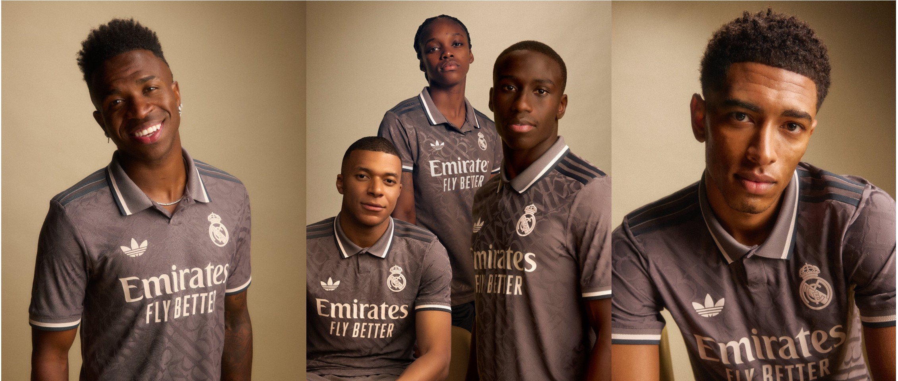

Sejarah Real Madrid

Real Madrid Club de Fútbol didirikan pada tahun 1902 di Madrid,
Spanyol, oleh sekelompok penggemar sepak bola yang dipimpin oleh
Juan Padrós. Awalnya bernama Madrid Football Club, klub ini
mendapatkan status "Real" atau "Kerajaan" pada tahun 1920 dari Raja
Alfonso XIII. Selama dekade awal, Real Madrid memenangkan beberapa
gelar domestik dan mulai membangun reputasinya di Spanyol. Klub ini
terkenal dengan seragam putihnya yang ikonik, yang hingga kini masih
digunakan.
Pada pertengahan abad ke-20, Real Madrid mengalami era keemasan di
bawah kepemimpinan Presiden Santiago Bernabéu. Dengan
bintang-bintang seperti Alfredo Di Stéfano dan Ferenc Puskás, Real
Madrid mendominasi kompetisi Eropa, memenangkan lima Piala Eropa
berturut-turut dari 1956 hingga 1960. Sejak saat itu, klub ini terus
menjadi salah satu klub sepak bola tersukses di dunia, mengumpulkan
banyak trofi domestik dan internasional, termasuk 15 gelar Liga
Champions hingga tahun 2024, menjadikannya klub dengan gelar Liga
Champions terbanyak.
Santiago Bernabéu

Stadion Santiago Bernabéu adalah markas dari klub sepak bola Real
Madrid yang terletak di pusat kota Madrid, Spanyol. Dibuka pada
tahun 1947, stadion ini awalnya dikenal sebagai Nuevo Estadio
Chamartín sebelum kemudian berganti nama menjadi Santiago Bernabéu
sebagai penghormatan kepada presiden legendaris Real Madrid,
Santiago Bernabéu. Dengan kapasitas awal sekitar 75.000 penonton,
stadion ini telah mengalami beberapa renovasi besar, termasuk
penambahan atap, perluasan tribun, dan peningkatan fasilitas.
Stadion ini menjadi saksi banyak pertandingan penting, termasuk
final Liga Champions dan Piala Dunia FIFA 1982.
Stadion ini merupakan simbol kebanggaan bagi Real Madrid dan terus
berkembang seiring waktu. Pada tahun-tahun terakhir, Santiago
Bernabéu mengalami renovasi besar-besaran untuk modernisasi, dengan
penambahan fasilitas canggih seperti atap yang dapat dibuka, layar
raksasa 360 derajat, dan peningkatan kenyamanan penonton. Renovasi
ini bertujuan untuk memperkuat posisinya sebagai salah satu stadion
terbaik di dunia, dengan kapasitas sekitar 85.000 penonton. Santiago
Bernabéu bukan hanya sekadar tempat untuk pertandingan sepak bola,
tetapi juga menjadi pusat komersial dan hiburan yang menarik
pengunjung dari seluruh dunia.
Jersey Musim 2024/2025
Untuk menjalani musim 2024-2025, Real Madrid menggunakan tiga jersey
dengan warna yang khas. Jersey kandang tetap mempertahankan warna
putih yang ikonik, dipadukan dengan aksen hitam pada Three Stripes.
Jersey tandang hadir dengan warna oranye cerah yang berani,
sementara jersey ketiga memiliki warna abu-abu.
Jersey Kandang

Jersey kandang Real Madrid Club de Fútbol untuk musim 2024-2025
yang diproduksi oleh Adidas memiliki warna putih tradisional tim
yang dipadukan dengan hitam pada "Three Stripes".
Jersey Tandang

Jersey tandang Real Madrid untuk musim 2024-2025 dari Adidas
menampilkan warna yang mengingatkan pada jersey ketiga pada musim
2013-2014. Jersey ini didominasi oleh warna oranye cerah dengan
aksen hitam. Kerahnya dilengkapi dengan detail berwarna putih.
Jersey Ketiga

Jersey ketiga Real Madrid untuk musim 2024-2025 dari Adidas
memiliki warna utama abu-abu kecokelatan (Charcoal) yang dipadukan
dengan embossing 'RMCF' di seluruh jersey untuk memberikan
tampilan yang unik.